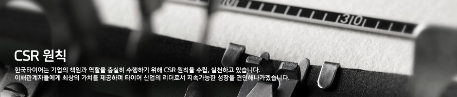

목적과 취지
본 CSR Principle은 한국타이어의 CSR(Corporate Social Responsibility, 기업의 사회적 책임)을 재정립하고 조직의 문화로 구축하여 기업경영의 근간으로 삼기 위한 기본적 원칙을 담고 있다. 한국타이어는 이 원칙을 근간으로 한국타이어의 이해관계자에게 최고의 가치를 제공하고 타이어 산업을 넘어 모빌리티(Mobility) 산업 전반의 지속가능한 발전과 성장을 리드하는 기업시민(Corporate Citizen)으로서의 역할과 책임을 다한다.
원칙의 정기적 리뷰와 개선
한국타이어의 CSR 전략위원회는 매년 정기적 리뷰를 진행하고 세부 운영방침에 대해서는 이해관계자 대화를 비롯한 중요성 평가를 통해 필요한 경우 개정 또는 개선을 진행한다.
통합 CSR관리 체계
CSR의 보다 체계적이며 전사적인 추진을 위해서 이사회 및 경영진 차원의CSR 최고 의사결정 협의체인 CSR 전략위원회를 구성하고, 이슈별 담당 임원과 실무자를 중심으로 구성된 실행 및 추진 협의체인 CSR 운영위원회를 통합관리 체계로 운영하며 CSR팀을 전담 부서로 하여 전사 CSR 기획과 운영, CSR Report 발간 등을 위한 역할과 책임을 규정한다.
CSR 관련 정책의 명문화
CSR과 관련된 운영 정책 및 제도 그리고 각 이슈별 실행 정책 등은 반드시 명문화하고 전사적으로 적용 및 실행될 수 있도록 조직 내외에 적극적으로 전파한다.
정기적 CSR 진단 및 모니터링
한국타이어는 글로벌 표준과 각종 법규 등을 포함하는 CSR 자체 진단모델을 개발하고 이를 활용하여, 매년 1회 정기적인 진단과 평가를 실시하고 CSR팀은 CSR 운영위원회를 통해 추진 성과와 문제점 등을 지속적으로 모니터링한다.
CSR 전사 교육 및 공감대 강화
CSR 확산 및 임직원의 공감대 형성을 위해 매년 전사 교육 계획을 수립하고 이를 실행한다.
이해관계자 대화 및 공시
한국타이어는 고객, 임직원, 협력사, 지역사회, 자연·생태·기후, 주주·투자자 등을 핵심 이해관계자로 규명하고 상시로 핵심 이해관계자 대화 채널 구축 및 연간 대화 계획 수립을 통해 정기적, 공식적인 대화 기회를 적극적으로 창출하고 향후 경영활동 및 CSR 추진 방향에 적용한다. 더불어 매년 CSR Report와 웹사이트 그리고 각 이해관계자들에게 최적화된 각종 커뮤니케이션 채널을 활용하여 CSR 및 경영활동 성과와 계획을 투명하고 충실하게 공개한다.
통합 리스크 관리
한국타이어는 재무적 리스크의 상시적 관리는 물론이고 비재무적 리스크(예: SEE(Social, Environmental, Ethical) Risk)에 대한 체계적 관리와 대응 노력을 다한다. 특히, CSR Focus Areas는 모두 리스크 이슈로 규정하고 CSR 운영위원회의 통합관리 체계를 통해서 전사적 대응 노력을 다한다.